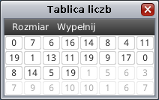

Pierwszy program: znajdowanie
maksymalnego elementu
Zanim przejdziemy do nauki rekurencji, warto byłoby bliżej zapoznać się
ze strukturą tej aplikacji. Jak już wcześniej było powiedziane ta aplikacja
jest dość nietypowa, gdyż pozwoli Ci na próbę napisania własnych programów.
Właśnie dlatego w tym miejscu dobrze byłoby abyś zaimplementował
jakiś prosty algorytm. Dla wprowadzenie spróbuj zrealizować
algorytm znajdowania indeksu maksymalnego elementu w tablicy.

Oprócz normalnych komend języka w niektórych lekcjach będą pojawiały się
tzw. „funkcje specjalne”, które będą integrować Twój program z otoczeniem.
Pewnie zauważyłeś, iż oprócz tego okna (z treścią zadania) w
aplikacji pojawiło się także drugie okno z tablicą liczb (na obrazku po lewej).
To właśnie na tej tablicy powinien działać twój program.
Oczywiście w tym celu w swoim programie powinieneś
skorzystać funkcji specjalnej: „int porownaj(idx1, idx2)”.
Funkcja „porownaj” jest dokładnie omówiona w zakładce „funkcje specjalne”.
W tej lekcji Twoim zadaniem jest zaimplementowanie funkcji:
„int idxMaxElement(n)”.
Jako parametr funkcja przyjmuje rozmiar tablicy
(możesz założyć, że 1 ≤ n ≤ 32).
Funkcja powinna zwracać indeks maksymalnego elementu. Jeśli w tablicy
znajduje się więcej niż jeden element maksymalny, to funkcja powinna
zwrócić indeks elementu maksymalnego o najmniejszej wartości.
Na przykład dla tablicy pokazanej na rysunku powyżej
maksymalnym elementem jest liczba 19 i znajduję się ona
w trzech miejscach: 8, 12 i 23. Wobec tego funkcja powinna zwrócić 8,
gdyż ten indeks jest najmniejszy spośród wszystkich indeksów elementów maksymalnych.
W przypadku pojawienia się problemów z implementacją tej funkcji, możesz wyświetlić
dwie wskazówki, które powinny przybliżyć Cię do rozwiązania.
Po zakończeniu implementowania tej funkcji powinienś
porównać swoje roziązanie z rozwiązaniem wzorcowym.